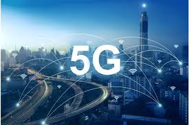
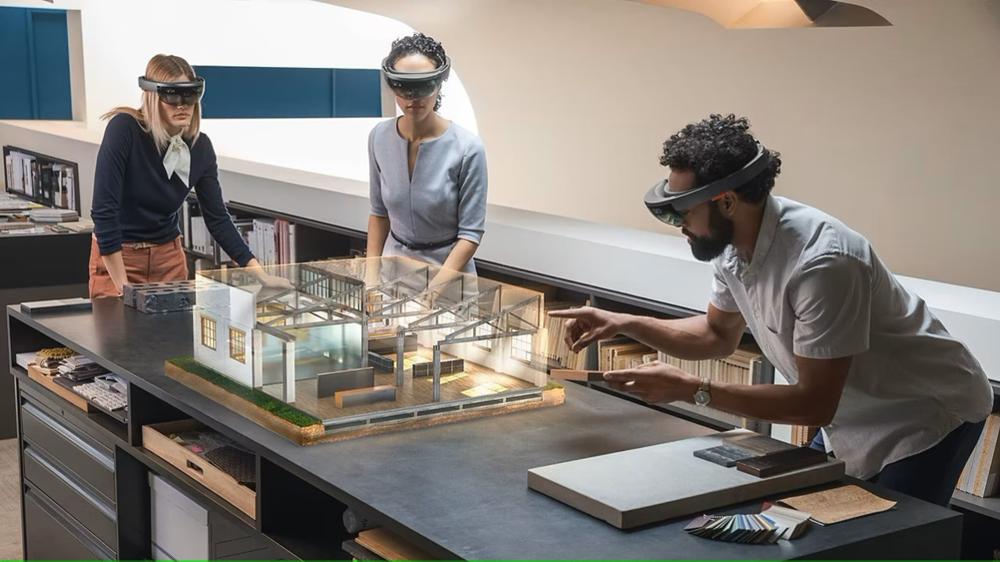
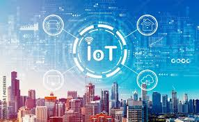

The next emerging technology trend is 5G! The fifth generation of mobile networks, 5G, promises significantly faster data download and upload speeds, wider coverage, and more stable connections. The expansion of 5G is facilitating transformative technologies like IoT, augmented reality, and autonomous vehicles by providing the high-speed, low-latency connections they require. This technology is crucial for enabling real-time communications and processing large amounts of data with minimal delay, thereby supporting a new wave of technological innovation. 
Enhanced Virtual Reality (VR) technologies are offering more immersive and realistic experiences. With improvements in display resolutions, motion tracking, and interactive elements, VR is becoming increasingly prevalent in gaming, training, and therapeutic contexts. New VR systems are also becoming more user-friendly, with lighter headsets and longer battery life, which could lead to broader consumer adoption and integration into daily life.
In 2025, Augmented Reality (AR) is poised to be a major tech trend, further integrating into consumer and enterprise applications. With the evolution of hardware, such as advanced AR glasses and improvements in mobile devices, AR will offer more immersive, interactive experiences. This technology is set to transform industries like retail, real estate, and education by enhancing how users visualize products, learn, and interact with their environments. AR-powered solutions will allow users to seamlessly overlay digital information onto the real world, bridging the gap between physical and digital experiences. 
IoT technology in smart cities involves the integration of various sensors and devices that collect data to manage assets, resources, and services efficiently. This includes monitoring traffic and public transport to reduce congestion, using smart grids to optimize energy use, and implementing connected systems for public safety and emergency services. As cities continue to grow, IoT helps manage complexities and improve the living conditions of residents. 
The personalized medicine and treatment approach uses genetic, environmental, and lifestyle factors to diagnose and treat diseases precisely. Advances in genomics and biotechnology have enabled doctors to select treatments that maximize effectiveness and minimize side effects. Personalized medicine is particularly transformative in oncology, where specific therapies can target genetic mutations in cancer cells, leading to better patient outcomes.